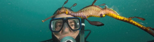

Citizen Science
Citizen Science
ALA Citizen Science Central
Resources and tools for Australia’s biodiversity projects

‘Citizen’-based contributions to mainstream scientific investigations are becoming increasingly important. Technology is helping to facilitate this by enabling projects to be more accessible to the public, providing greater effectiveness of communications between science practitioners and citizen scientists, and providing accessible data collection and management tools which improve the flow and quality of data.
For the Atlas, citizen science is a very important source of data about biodiversity. Data and insights gained through the efforts of citizen scientists can be as valuable as those obtained by scientists working in academia, natural history collections, government agencies and business. Harnessing the enthusiasm, interest and efforts of the thousands of people participating in citizen science will continue to enhance the range and depth of data available for analysis and research.
Browse Citizen Science projects >
Add your own citizen science project to the project finder to help people to find and connect with your project. You can also use BioCollect to record your citizen science data (find out more …).
What is ‘citizen science’?
The Open Scientist website offers this definition of citizen science: ‘The systematic collection and analysis of data, determination of technology, testing of natural phenomena, and the dissemination of these activities by researchers on a primarily avocational basis.’ For Australia’s biodiversity, it is the participation of anyone who is not a practising ecologist, taxonomist, or biological scientist, in the collection of biodiversity related data.

Discovery Circle’s Oaklands Wetlands Bioblitz 2014 (Oaklands, South Australia)
Get involved in citizen science
Sometimes citizen science projects are run as short campaigns, such as bioblitzes, and sometimes they are ongoing data collection projects. You can get as involved as much or as little as you like, but in all cases your sightings are valued contributions to the scientific knowledge and the national biodiversity database.
Start recording the organisms in your own area and on your travels, and join thousands of other people in building Australia’s biodiversity knowledge. Get yourself on the Citizen Science Leader Board by recording as many different species as you can.
Perhaps you are interested in a particular species or group of species. Why not join an existing project or create your own project.
There are several ways for you to participate in citizen science:
- Add your sightings of plants or animals directly into the Atlas of Living Australia
- Contribute your sightings to one of the many citizen science projects currently happening in different areas of Australia. These range from species specific projects (eg. Koala counts, frogwatch, etc.) to regional or national multi-species themed projects (eg. FeralScan, ACT and Southern Tablelands Weedspotter, Waterwatch, etc.), or regional atlases (eg. the Atlas of Life in the Coastal Wilderness).
- If you have skills in identifying organisms, why not join BowerBird and help other people identify their sightings.
- Join the fun and interesting projects in DigiVol which are using crowdsourcing to digitise all sorts of resources into data which can be searched and analysed to improve our knowledge of biodiversity and the natural world.
- Get involved in the Australian Citizen Science Association or a group which is already running citizen science projects, such as one of the ALA affiliates.
Download the new Australian BioBlitz Guidelines developed by members of the Australian Citizen Science Association.
A BioBlitz is a brief intensive and fun event, usually over just a few days, in which community members join with science and ecology experts to inventory species in a local area. They can be organised by anyone, anywhere and are a great way to encourage your community to be more engaged and interested in the local environment. Examples of BioBlitzes that have already been run in Australia can be found in the Citizen Science Project Finder and below are some materials to help you get started to run your own BioBlitz event. Don’t forget to add it to the project finder to advertise the event as well. You can even use BioCollect to record your data.
BioBlitz Resources - Guides & templates
- Australian Guide to Running a BioBlitz (pdf, 5.12 MB)
- BioBlitz BUDGET template (docx, 16 KB)
- BioBlitz COMMUNICATIONS PLAN template (docx, 14 KB)
- BioBlitz EQUIPMENT LIST template (docx, 17 KB)
- BioBlitz RISK ASSSESSMENT template (docx, 15 KB)
- BioBlitz EXAMPLE SURVEY DETAIL FORM template (docx, 487 KB)
- BioBlitz PARTICIPANT REGISTRATION FORM template (docx, 15 KB)
- BioBlitz DATA RECORDING FORM template (docx, 13 KB)
- BioBlitz Example EVALUATION QUESTIONS template (docx, 485 KB)
BioBlitz Resources - Case studies & examples
- S2S BioBlitzes 2013-15 - Case studies (docx, 415 KB)
- S2S Thurgoona Bioblitz 2013 - Case study (pdf, 741 KB)
- World Parks Congress BioBlitz 2014 - Case study (docx, 17 KB)
- ReefBlitz 2014 - Case study (pdf, 3.84 MB)
- Oaklands Wetlands BioBlitz - Timetable (docx, 15 KB)
- Mimosa Rocks BioBlitz - Timetable (pdf, 134 KB)
- Panboola BioBlitz - Timetable (docx, 135 KB)
- Panboola BioBlitz - Resident leaflet (docx, 982 KB)
- Panboola Bioblitz - Poster for volunteers (pdf, 484 KB)
- Panboola Bioblitz - Survey Registration and Survey Meeting Places (pdf, 729 KB)
- Bermagui BioBlitz - Survey details (pdf, 110 KB)
Tips & Tricks
It can often be difficult to accurately identify a sighting out in the field and identifying organisms to species level can be challenging even for experts in some groups of organisms. Below are some tips and tricks to help even the most seasoned Citizen Scientist improve their contributions.
Improve your nature photography
Including good quality photos with your sighting record is important to support both the quality of your record and the correct identification if you need to seek help in identifying the specimen. Nature photography can also be fun and rewarding in itself. A quick search on the internet will provide lots of fantastic resources to help improve your photographic skills.
Take great photos of small things
Many organisms are very small and correct identification may require really good close-up (macro) photos, sometimes from several angles. For insects, sharp photos of heads, mouth parts and reproductive organs are also important.
A search on the internet such as this will find several helpful tips on taking sharp macro natural photos.
Try to identify it yourself
There are a couple of identification support tools available on the internet. These tools are constantly being updated and improved, but they can be difficult to use, particularly for non-taxonomists.
Affiliates of Citizen Science
Australian Citizen Science Association
Be a part of The national citizen science adocacy and community discussion forum.
Queensland Museum

Insert QM description here.
Museum of Victoria

Insert MoV description here.
Australian Museum

The Australian Museum is home to the Australian Museum Centre for Citizen Science and has had a long history in citizen science projects. The museum currently manages, with collaborators, some of Australia’s most well known and best loved citizen science projects such as Bushblitz, Bioblitz and Streamwatch. The Museum also partners with the Atlas of Living Australia in the creation and management of the hugely successful DigiVol digital volunteering program; where volunteers from all over the globe can delve into the Australian Museum collection transcribing the data, so it is discoverable online for anyone to access anywhere in the world.
The Discovery Circle

Insert Discovery Circle description here.